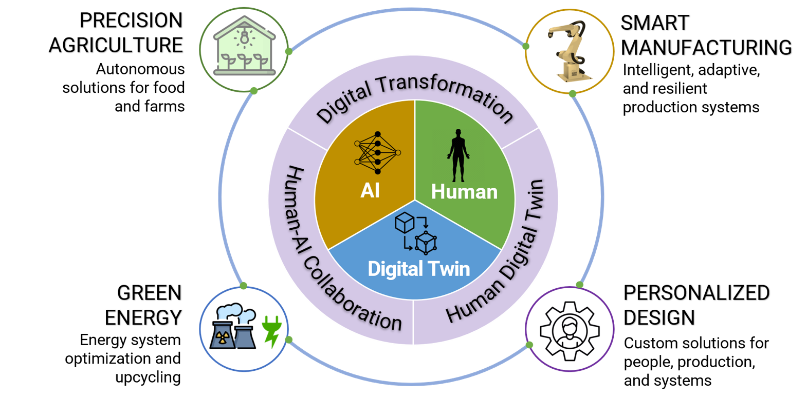

Advancing intelligent engineering systems through AI, digital twins, and human-centered design.

The research at the MIS Lab focuses on advancing the fundamentals and applications of design theory, digital twin, and artificial intelligence for improving the resilience, sustainability, and efficiency of various engineering systems.
Our work spans human-robot collaborative systems, autonomous additive manufacturing systems, mass personalization service systems, and agricultural systems — in close collaboration with industrial and government partners.
We bring together a multidisciplinary team from mechanical engineering, computer engineering, and data science to tackle real-world challenges across four core research pillars.
Leveraging enabling technologies — AI, digital twin, and IoT — to improve the transparency, traceability, efficiency, and resilience of manufacturing processes and systems. Intelligent, adaptive, and resilient production systems.
Developing data-driven methods and AI to support mass customization of personalized products and services, including personalized human-robot collaboration systems. Custom solutions for people, production, and systems.
Developing novel AI tools to support smart decision-making, autonomous control of greenhouse operations, and knowledge reuse for food and farm systems. Autonomous solutions for food and farms.
Leveraging advanced manufacturing processes (e.g., additive manufacturing) and AI to support upcycling of EV batteries and agricultural waste into bio-fuel. Energy system optimization and upcycling.